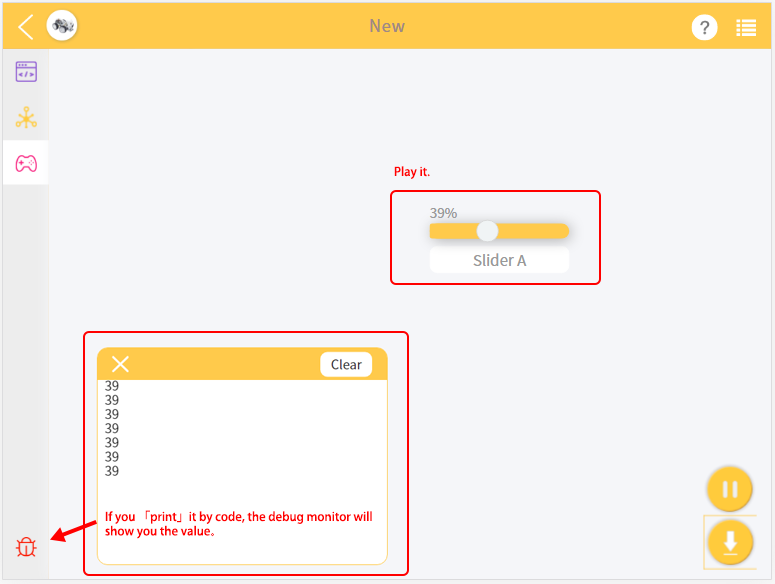

How to Use the Remote Control Function?¶
进入 Remote Control Page 。

Drag the widget you want, the configuration will also pop up.

返回 Programming Page , you can see the new block appears. Complete your code please.

After you run the code, go back to the Remote Control Page , Play it.
